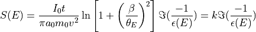

hyperspy.misc.eels.tools module
- hyperspy.misc.eels.tools.eels_constant(s, zlp, t)
Calculate the constant of proportionality (k) in the relationship between the EELS signal and the dielectric function. dielectric function from a single scattering distribution (SSD) using the Kramers-Kronig relations.

- Parameters
zlp ({number, BaseSignal}) – If the ZLP is the same for all spectra, the intengral of the ZLP can be provided as a number. Otherwise, if the ZLP intensity is not the same for all spectra, it can be provided as i) a Signal of the same dimensions as the current signal containing the ZLP spectra for each location ii) a Signal of signal dimension 0 and navigation_dimension equal to the current signal containing the integrated ZLP intensity.
t ({None, number, BaseSignal}) – The sample thickness in nm. If the thickness is the same for all spectra it can be given by a number. Otherwise, it can be provided as a Signal with signal dimension 0 and navigation_dimension equal to the current signal.
- Returns
k
- Return type
Signal instance
- hyperspy.misc.eels.tools.estimate_variance_parameters(noisy_signal, clean_signal, mask=None, pol_order=1, higher_than=None, return_results=False, plot_results=True, weighted=False, store_results='ask')
Find the scale and offset of the Poissonian noise
By comparing an SI with its denoised version (i.e. by PCA), this plots an estimation of the variance as a function of the number of counts and fits a polynomy to the result.
- Parameters
noisy_SI (signal1D.Signal1D instances) –
clean_SI (signal1D.Signal1D instances) –
mask (numpy bool array) – To define the channels that will be used in the calculation.
pol_order (int) – The order of the polynomy.
higher_than (float) – To restrict the fit to counts over the given value.
return_results (Bool) –
plot_results (Bool) –
store_results ({True, False, "ask"}, default "ask") – If True, it stores the result in the signal metadata
- Returns
Dictionary with the result of a linear fit to estimate the offset
and scale factor
- hyperspy.misc.eels.tools.get_edges_near_energy(energy, width=10, only_major=False, order='closest')
Find edges near a given energy that are within the given energy window.
- Parameters
energy (float) – Energy to search, in eV
width (float) – Width of window, in eV, around energy in which to find nearby energies, i.e. a value of 10 eV (the default) means to search +/- 5 eV. The default is 10.
only_major (bool) – Whether to show only the major edges. The default is False.
order (str) – Sort the edges, if ‘closest’, return in the order of energy difference, if ‘ascending’, return in ascending order, similarly for ‘descending’
- Returns
edges – All edges that are within the given energy window, sorted by energy difference to the given energy.
- Return type
- hyperspy.misc.eels.tools.get_info_from_edges(edges)
Return the information of a sequence of edges as a list of dictionaries